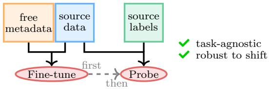

Who Needs Labels? Adapting Vision Foundation Models With the Metadata You Already Have Elouan Gardès, Seung Eun Yi, Kartik Ahuja, Théo Moutakanni, Huy V. Vo, Piotr Bojanowski, Wolfgang M. Pernice, Loïc Landrieu, Camille Couprie；机构信息 arXiv 元数据未列出。 arXiv 原文链接
先说结论。通用视觉 foundation model 落地时常有时间、地点、设备、拍摄条件等 metadata，FINO 提供了“无标签但有元信息”的自监督适配范式。 提出无需任务标签的 VFM domain adaptation 路径，避免 supervised fine-tuning 在稀缺标签科学域中破坏模型 generality 与 robustness。
(c) Performance relative to domain SOTA (a) Data with metadata (! discrete, & continuous) (c) Performance relative to domain SOTA (a) Data with metadata (! discrete, & continuous) Figure 1 Learning with Metadata. Scientific datasets (a) often come with rich metadata describing their acquisition conditions. We leverage these signals as weak supervision (WSL), together with a self-supervised objective (SSL), to adapt a generic foundation model to a new application domain without task labels (b). The resulting representations can be probed to outperform fully supervised fine-tuning and even match or surpass highly specialized domain-specific state-of-the-art (c).这张图/表用于判断 Who Needs Labels? Adapting Vision 的实验收益来自哪里。重点看替换、消融或跨模型设置下趋势是否一致，而不是只看单个最高分。

(b) Unsupervised Domain Adaptation (d) Weakly-Supervised Representation Adaptation Figure (b) Unsupervised Domain Adaptation (d) Weakly-Supervised Representation Adaptation Figure 2 Representation adaptation paradigms. Task-centric methods (a–b) adapt models using labels. Supervised fine-tuning (a) relies on labelled source data but fails under domain shift. Unsupervised domain adaptation (b) additionally uses unlabelled data from the target distribution to mitigate this shift, but remains task-specific. In contrast, representation adaptation methods (c–d) first adapt the representation to a new application domain without task labels, and only then train a lightweight probe. Self-supervised adaptation (c) may capture spurious structure. FINO (d) leverages freely available metadata to learn representations that are both task-agnostic and robust to domain shift.这张图来自论文 PDF 的结构化抽取。当前用于辅助理解 Who Needs Labels? Adapting Vision 的方法或实验，请结合正文精读段落一起看。
核心问题
通用视觉 foundation model 落地时常有时间、地点、设备、拍摄条件等 metadata，FINO 提供了“无标签但有元信息”的自监督适配范式。